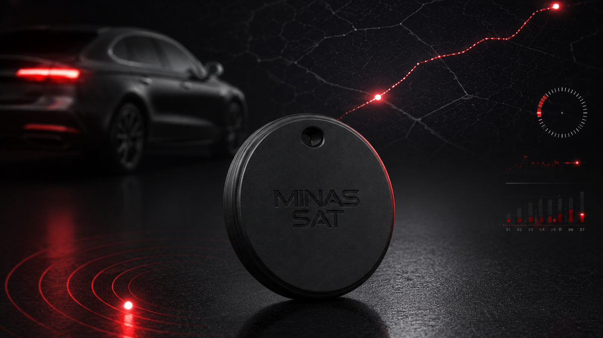

Acompanhe objetos e pequenos ativos com uma solução discreta.
A TAG rastreadora tem formato semelhante ao tamanho de uma moeda e pode ser indicada para bolsas, malas, equipamentos, chaves e outros itens. A forma de localização, a autonomia e a frequência de atualização dependem do modelo e do cenário de uso.

Imagem ilustrativaPara itens que pedem discrição e praticidade.
A indicação depende do item, da rotina de uso, da tecnologia disponível e da cobertura necessária.
Uma solução compacta, definida conforme o cenário.
Antes da indicação, a Minas Sat verifica o objetivo do cliente e as características técnicas do modelo disponível.
O que pode variar conforme o modelo
Importante antes de contratar
A TAG compacta não substitui automaticamente um rastreador veicular com alimentação contínua, telemetria, bloqueio ou monitoramento operacional. Para veículos e frotas, a equipe avalia se a aplicação correta é a TAG, um rastreador convencional ou uma combinação de soluções.
Conhecer rastreamento veicularComo seguimos com a análise.
O atendimento comercial coleta as informações e orienta a alternativa compatível com a necessidade.
Entender o item e o objetivo.
Informe o que será acompanhado, onde será utilizado e qual resultado espera da solução.
Confirmar tecnologia e cobertura.
A equipe valida o modelo disponível, suas limitações, autonomia e forma de acompanhamento.
Configurar e orientar o uso.
Após a contratação, o cliente recebe a orientação correspondente à solução escolhida.
Quer saber se a TAG atende sua necessidade?
Conte o que deseja acompanhar e receba uma orientação sem promessas genéricas.